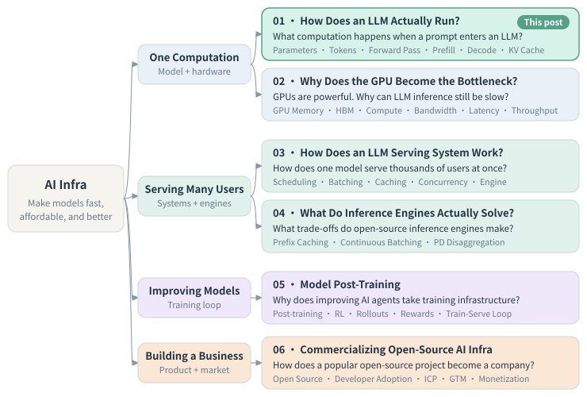
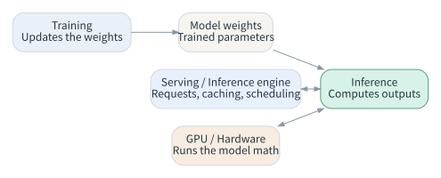
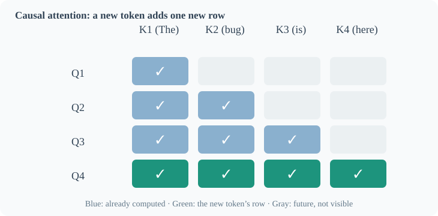
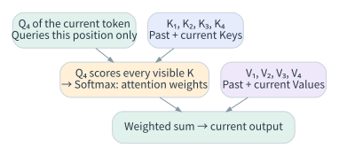
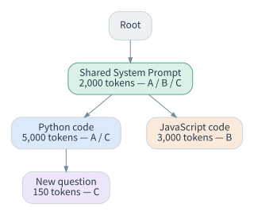
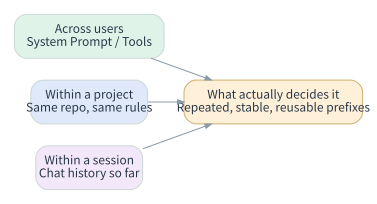
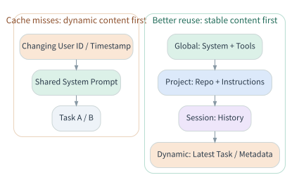

What Happens After a Prompt Enters an LLM?
This is the first note in my series on learning AI infra from zero. I'm writing for readers like me: you've used AI and know roughly how it works, but you aren't an infra specialist. The token counts and examples below are teaching assumptions I chose to make the mechanisms clear, and the diagrams don't show any engine's full official implementation.
00How I Started Learning AI Infra
I knew nothing about AI infra. I didn't even know where to start. But the company I was interviewing with builds AI infra, so I had to figure out what the field actually does.
My first move was to ask AI to explain it.
On the first try, I asked for the basics. The answer was too shallow, and several parts didn't match AI infra at all. On the second try, I asked it to focus on the company's core technology. It started describing the company instead. My reaction: no, no, no, hold on. This is wrong.
That's when I noticed the most important lesson of the whole process:
When AI gives you something that feels wrong, don't ask it to try again and again. It hasn't understood what you want, so more attempts won't get you there. Stop, and work out with it what you actually need.
So I changed the question: "I don't understand this field yet. Can we build a knowledge tree first? Give me the structure, break it into steps, and then I'll work down the tree one level at a time."
This time, the learning plan it gave me was right.
One more habit made a big difference. After each concept, I had AI ask me a question, and I answered it. That way it could test whether I'd actually understood the idea. This is the Feynman technique: if you can explain something in your own words, you understand it. I wrote about how I use AI for this in How to Learn Anything (the AI Edition).
Stop, Don't Retry
Retrying only gives you new versions of the same misunderstanding. First agree with AI on what you actually want.
Get the Structure First
Ask AI to map the field as a knowledge tree with clear levels, then pick where to start.
One Question per Node
After each module, you should be able to explain one real question, not just recite definitions.
Quiz Me after Each Concept
After each concept, AI asks one question and I answer in my own words. If I can't, I haven't understood it yet.

The order of the four levels matters. First I need to understand one computation on its own: how the model computes and where the hardware gets stuck. Next comes serving many users, then improving the model over time, and last, how all of this becomes a business. This post covers module 01: what computation happens when a prompt enters an LLM, and which repeated work we can avoid?
To keep the ideas concrete, I use one example throughout: a startup that builds an AI coding agent on an open-source model such as Qwen. For each idea, I ask the same four questions in order. Why does this problem come up? How does the computation actually work? So what does it change? And how does it apply in a real product?
01Training, Inference, and the Life of a Request
Training adjusts the model's weights so the model learns to do a task. Ordinary inference uses the trained weights to compute outputs for new inputs, and the weights usually stay fixed. Inference doesn't pull a prepared answer from a database. It runs a fresh forward pass and generates tokens one by one.

Back to the AI coding agent. A user submits 20,000 input tokens of code context, and the model generates 50 output tokens. Here is the main flow:
- The application turns the content into token IDs the model can process.
- Prefill: the model runs over all known input tokens, computes each layer's hidden states and KV, and gets what it needs to generate the first token.
- Decode: the model usually generates one token per step, appends it to the context, and then generates the next one.
- The application turns the output tokens back into readable text and returns it.
Prefill vs. Decode
| Prefill | Decode | |
|---|---|---|
| Main job | Process the existing input | Generate new output step by step |
| Parallelism | Input positions are known, so the work runs largely in parallel | Each step in a request usually depends on the token the previous step produced |
| Typical metric | A large part of TTFT (time to first token) | TPOT (time per output token), generation speed |
| Engineering focus | Handling long prompts efficiently | Efficiency of each generation step and KV access |
A quick check: one request has 20,000 input tokens and 50 output tokens. Another has 100 input tokens and 2,000 output tokens. The first will likely spend most of its resources on prefill. The second will likely feel the long decode. Token counts alone can't predict total latency, though.
An easy detail to get wrong: 2,000 output tokens means roughly 2,000 sequential prediction steps, and each step still runs a huge amount of parallel GPU work. Batching also lets the GPU process different users' requests in the same decode step. In short, decoding is sequential across generation steps; parallel within each step and across batched requests. Methods such as speculative decoding can cut some of the sequential cost.
02Causal Attention: Why Past States Stay Fixed
In a Transformer's self-attention, each token produces three vectors: a query, a key, and a value. For the 4th token, attention conceptually matches Q₄ against K₁…K₄, then uses the resulting weights to combine V₁…V₄.

Causal means a position can't see tokens that come after it. When the 4th token arrives, the attention results for the first three positions don't change. The model only computes the output for the new position.
The standard attention formula:
Why Cache K and V but Not Past Q?

- Past Q: the model already used it to compute that position's attention output. A new position doesn't need to send queries from Q₁, Q₂, or Q₃ again.
- Past K: the new query Q₄ still compares against the past keys to compute new attention scores.
- Past V: the new attention weights still combine the past values to produce the current output.
- The full attention matrix: there's no need to keep every score for every past query. Each new query computes its own scores, and the full matrix can get very large.
So the KV cache stores the past key and value tensors for each attention layer. It doesn't store raw text, and it isn't the model's "memory database."
The cache doesn't remove attention itself. A new token still has to compute its own state, score it against the past keys, and combine the values.
03The Benefit and Cost of the KV Cache
Benefit: later steps in the same request don't recompute the whole history from scratch. Long conversations and multi-turn agent tasks gain the most.
Cost: the KV tensors have to live somewhere, usually in GPU memory. For common full-context attention models, with everything else fixed, KV cache size grows roughly linearly with context length and with the number of active requests. GPU memory is limited, so an engine can't keep every user's full history for free.
That leaves two goals pulling against each other:
Reuse the cache as much as possible to avoid repeated work, without letting it fill GPU memory and crowd out new requests.
Modules 02 (GPU memory and bandwidth) and 03 (serving) in the knowledge tree pick up this bottleneck.
04From One Request's KV Cache to Prefix Reuse across Requests
Ordinary incremental generation first reuses past KV within the same request. One step further: if different requests share exactly the same token prefix, and the model and inference settings are compatible, the engine can reuse that prefix's KV too.
Suppose there are three requests:
- A: shared system prompt (2,000) + Python code (5,000), 7,000 tokens in total.
- B: the same shared system prompt (2,000) + JavaScript code (3,000), 5,000 tokens in total.
- C: the same system prompt (2,000) + the same Python code (5,000) + a new question (150), 7,150 tokens in total.

Inference engines often manage these prefixes with a compressed prefix tree. One edge can represent a run of consecutive tokens, and requests with the same prefix share a branch. The engine maps token sequences to their KV cache locations, and uses the tree to match prefixes, insert new entries, reuse cached KV, and evict old entries. The tree is an index; the actual KV data lives separately in GPU memory.
In the ideal case, where the cache stays available:
| Request | Input to process without reuse | New input with prefix reuse |
|---|---|---|
| A | 7,000 | 7,000 |
| B | 5,000 | 3,000 |
| C | 7,150 | 150 |
| Total | 19,150 | 10,150 |
That cuts repeated prefill work by 9,000 / 19,150 ≈ 47% of input tokens. It doesn't mean real latency or FLOPs drop by 47%. Actual performance also depends on compute overhead, the implementation, and whether the cache is still there.
One key point: the same words don't mean the same KV. A token's higher-layer representation depends on the context before it. What an engine can reuse is the computed state of an identical prefix, with compatible positions and settings. Matching words across two different conversations doesn't count.
Eviction
When GPU memory runs short, an engine can't keep every branch. A common policy is LRU (least recently used): free cache starting from evictable leaf nodes, and protect the parts that active requests are using. Some engines also offer LFU, SLRU, or priority-based eviction. Whether a cache entry hits, or still exists, also depends on request scheduling, routing, and GPU capacity.
05Where I Got It Wrong: The Real Split Isn't B2B vs. B2C
My first instinct: B2B teams share code repositories, so their prompts seem more likely to repeat. B2C users each have different histories, so sharing seems hard.
Then I realized that sharing across users is only one source of reuse:

| Sharing scope | Example | What it means |
|---|---|---|
| Global / cross-user | A fixed system prompt and tool definitions | Different users can share a stable prefix |
| Project | The same codebase and project instructions | Team workflows may share an extra-long prefix |
| Session | One person's ongoing conversation and history | Even when every user differs, each session keeps reusing its own prefix |
The value of prefix caching depends on how much of a workload is repeated, stable, reusable prefix, and on whether the engine can keep and reach it. The B2B or B2C label doesn't decide it.
06Prompt Structure Is Engineering Too
A concrete question came up for me: suppose a prompt puts a changing user ID or timestamp at the very beginning. The 2,000-token system prompt after it is identical every time. Why does the cache still miss so often?
Prefix matching starts at the first token. Once the beginning differs, every later position has a different context. The engine can't skip the start and reuse the KV for the part after it.
The better principle: stable content first, dynamic content last.

You can layer a prompt by stability:
- Global: stable tool definitions and system instructions.
- Project: shared project instructions and codebase context.
- Session: the stable history of the current session.
- Dynamic: the current task, temporary state, the time, and anything else that changes.
If the user ID or timestamp only exists for application logs, leave it out of the model prompt entirely and manage it as application metadata. Two limits apply. Don't reorder instructions the model must follow just to raise the hit rate, and don't cross data isolation boundaries between tenants. Real APIs also often fix the serialization order as tools → system → messages.
A Real Case: Claude Code
In a 2026 engineering post, "Lessons from building Claude Code: Prompt caching is everything," Anthropic describes what they do in practice. They put the static system prompt and tool definitions in a stable prefix, then layer the project's CLAUDE.md, session state, and conversation after it. They also hit cache misses caused by timestamps and changes in tool order, and they stress stable prefixes and cache metrics.
To be precise: this describes prompt caching in Anthropic's own API. It says nothing about which open-source inference engine, if any, runs underneath Claude Code. What carries over is the engineering principle, not the implementation.
07Connecting the Chain
At this point I won't just say "this inference engine makes AI faster." A causal chain explains more:
An inference engine does far more than prefix caching. It also handles request scheduling, batching, model execution, and other optimizations. This post follows only one important technical thread. That thread leads to some product questions:
- Which developer workloads share a lot of stable prefix: agents, multi-turn coding, or RAG?
- How do you measure effective cache hits, TTFT, TPOT, throughput, and cost per request?
- Under which models, hardware, and request patterns are the gains large? When is the cache worth the GPU memory it takes?
After this module, I can walk from user input through prefill → decode → causal attention → KV cache → prefix reuse across requests, and explain the benefits, the costs, and when it applies.
—References
- Vaswani et al., Attention Is All You Need (2017)
- Kwon et al., Efficient Memory Management for Large Language Model Serving with PagedAttention (2023)
- vLLM: Automatic Prefix Caching (design doc)
- Anthropic: Lessons from building Claude Code: Prompt caching is everything (2026-04-30)
- Anthropic: Prompt Caching Docs
Limits of these notes: the diagrams are simplified and don't show any engine's full official implementation. The token counts are teaching assumptions. Sharing across requests depends on the model, its settings, whether the cache is still resident, and isolation rules. Prompt caching in Anthropic's API isn't the same as prefix caching inside an open-source inference engine. Fewer repeated input tokens don't translate into proportional savings in real GPU compute or cost.